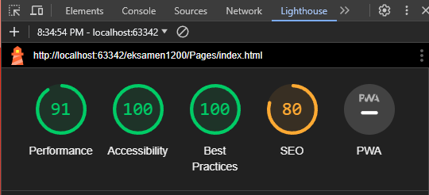
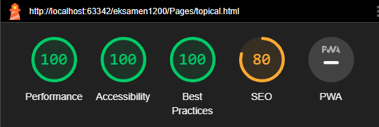
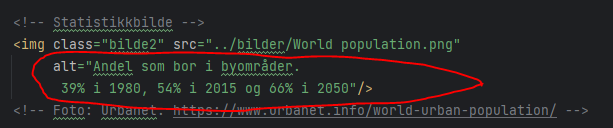
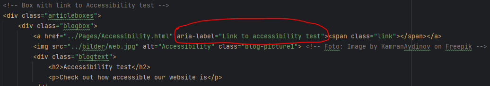

Accessibility

To ensure that this website is consumable for anyone that may stumble upon it, we have taken certain measures as to guarantee its accessibility. First of all, automated tests using the open source Lighthouse tool have been run, and alterations to achieve an at least 90+ accessibility score on every page, both desktop and mobile, have been made accordingly. Screenshots of these tests just below.
 With accessibility in mind throughout the whole process of developing this simple website, common measures to secure said accessibility have also been deployed. As a result of this, every image you are presented with here will have built in alt-text, ensuring screen readers' ability to present the image's contents to its user. This page is no exception, if testing that statement should be of interest. We made sure that said alt-text remained concise, after initially being prompted to shorten it to below 150 words total per image.
 If you look at the images of our code presented on this page, you will see small circled areas with code we want to highlight. One such is the aforementioned alt-text for images, another one a so-called aria-label. In this case it's being used to inform a potential screen reader that the boxes as seen on the Home page also function as links to the other pages. Specifically here the aria-label circled refers to this page. In addition to alt-text and aria-labels, we have made sure to design the webpage using contrasting colors. That is, the color of the text and its background are contrasted, as to ensure the text's proper visibility for readers. Navigating the website should be possible with a keyboard, and it has been made able to be viewed from other devices than a desktop as well.
More examples of changes that were only made after actually testing the websites are amongst other things that we made sure to have a line-height of at least 1.5, and if you look at the links in the navigation bar of the CAMPUS page, the words themselves were initially not of a high enough contrast compared to the background.